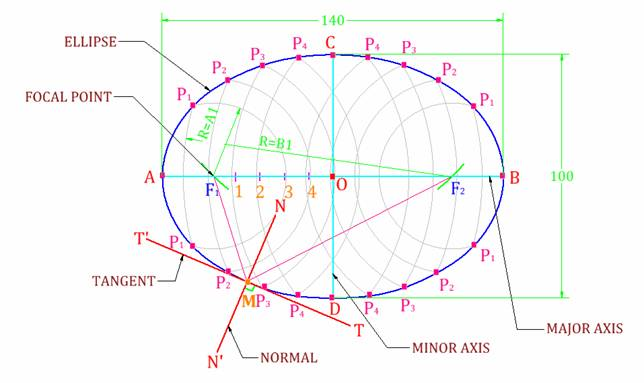
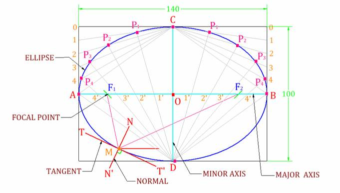

Engineering Curves –
Example 1.1 Construct an ellipse by arcs of circle method. The major and minor axes are 140 mm & 100 mm respectively. Also draw the tangent and normal to the ellipse at any suitable point.
Procedure:
Step-1 Draw a horizontal major axis of the length 140 mm and give the notations A & B as shown in the figure. And mark a midpoint O on it.
Step-2 Draw a vertical axis, perpendicular to the horizontal axis & passing through the point O; of the length equal to the length of minor axis, which is 100 mm and give the notations C & D as shown in the figure.
Step-3 With the center C or D and length equal to the half of the length of major axis; which is 70 mm; cut the major axis on two sides of the minor axis and give the notations F1& F2 respectively as shown in the figure. These are the focal points of the ellipse.
Step-4 Divide the distance between O & A into five equal divisions and give the notations 1,2,3 etc.

Step-5 Now with the distance equal to A1 and center F1 draw an arc of
sufficient length, and with the distance equal to B1 and center F2 cut the
previously drawn arc on two sides of the major axis and give the notations
P1& P1 as shown in the figure.
Step-6 Like in the above stated manner draw arcs with the distances A2 –B2, A3 – B3, A4 – B4 etc. and center F1 – F2 respectively, which should intersect with each other respectively as shown in the figure. And give the notations as P2-P2, P3-P3, P4-P4 etc.
Step-7 Draw a smooth free hand medium dark curve through the points P1, P2, P3 etc. as shown in the figure; in sequence, so the resulting curve is the ellipse.
Step-8 Now mark a point anywhere on the ellipse; i.e., the point M, and connect this point with the focal points F1& F2 with straight lines. Then bisect the angle F1MF2 and draw a line of suitable length and give the notations N – N' as shown in the figure. This is normal passing through the point M on the ellipse. Then draw a line which is tangent to the previously draw normal and give the notations T-T', this is tangent passing through the point M on ellipse.
Step-9 Give the dimensions by any one method of dimensions and give the name of the components by leader lines wherever necessary.
Example 1.2 Draw an ellipse by oblong method. Size of the rectangle is 140 mm X 100 mm. Draw the tangent and normal to the ellipse at any suitable point.
Procedure:
Step-1 Draw a horizontal major axis of the length 140 mm and give the notations A & B as shown in the figure. And mark a midpoint O on it.
Step-2 Draw a vertical axis, perpendicular to the horizontal axis & passing through the point O; of the length equal to the length of minor axis, which is 100 mm and give the notations C & D as shown in the figure.
Step-3 With the center C or D and length equal to the half of the length of major axis; which is 70 mm; cut the major axis on two sides of the minor axis and give the notations F1& F2 respectively as shown in the figure. These are the focal points of the ellipse.
Step-4 Then make a rectangle of the sides 140 mm X 100 mm, passing through the end points of the major and minor axes i.e., ABCD, as shown in the figure

Step-5 Divide the major axis AB into 10 equal divisions and give the notations as 1', 2', 3' etc. as shown in the figure. And also divide the upper half of the two vertical lines passing through the point A & B, into 5 equal divisions and give the notations as 1,2,3,4 etc. as shown in the figure.
Step-6 Now set all the points 1,2,3,4 etc. at the point C with straight lines. And from the point D draw straight lines such that the lines should start form the point D-should pass through the points 1', 2', 3' etc. and intersect to the lines C1, C2, C3 etc. respectively, as shown in the figure. And give the notations as P1, P2, P3 etc. respectively as shown in the figure.
Step-7 Draw a smooth free hand medium dark curve passing through the points P1, P2, P3 etc. as shown in the figure on both sides of the major axis; in sequence, so the resulting curve is the ellipse.
Step-8 Now mark a point anywhere on the ellipse; i.e., the point M, and connect this point with the focal points F1& F2 with straight lines. Then bisect the angle F1MF2 and draw a line of suitable length and give the notations N – N' as shown in the figure. This is normal passing through the point M on the ellipse. Then draw a line which is tangent to the previously draw normal and give the notations T-T', this is tangent passing through the point M on ellipse.
Step-9 Give the dimensions by any one method of dimensions and give the name of the components by leader lines wherever necessary.